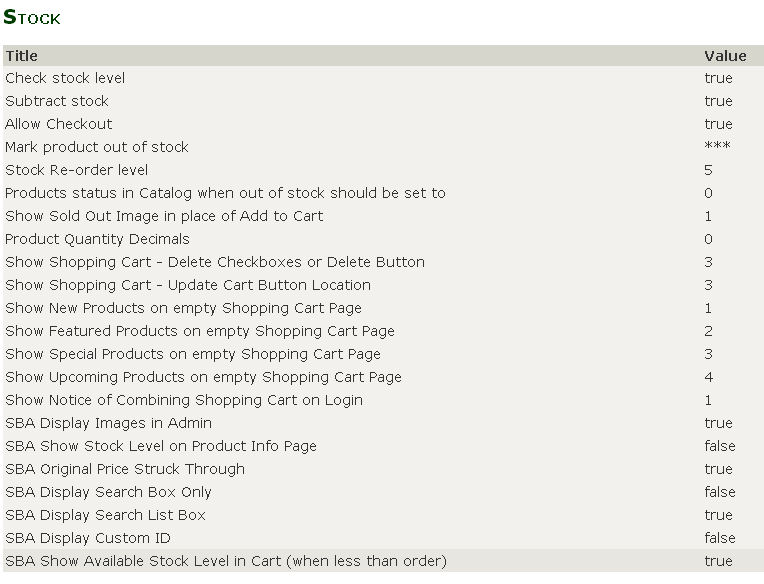
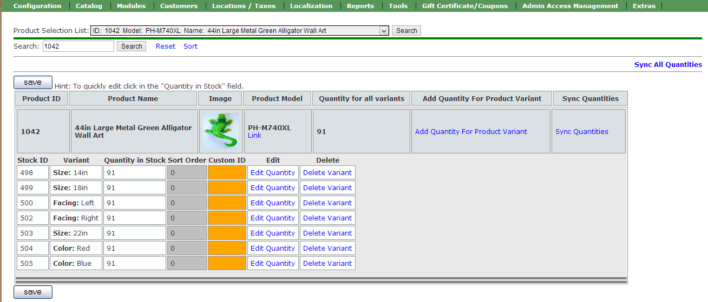
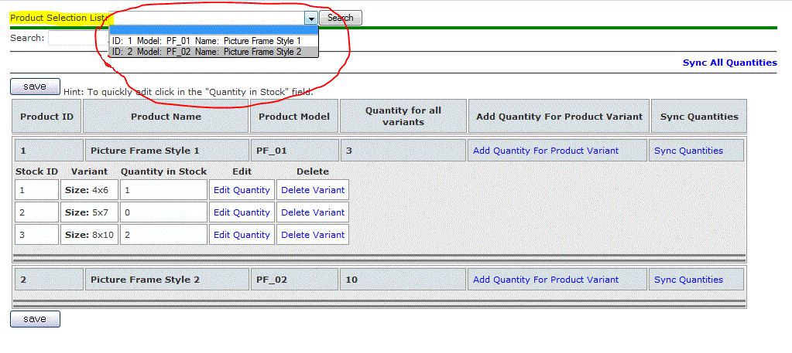
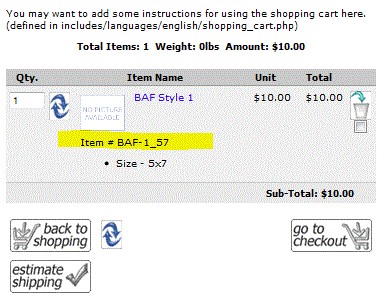

Installation | Configuration | Attribute Stock Setup | Optional Update | Optional Export / Import | Notes | HOME
To configure SBA, go to admin>Configuration>Stock, you should see the following.
All options starting with SBA have been added to the stock menu by this mod.
By default all new flags are set to off (false). Here are some suggeted setting:

For information on how to use the following option switches click below:
Check Stock level - Check to see if sufficient stock is available . Options (True/False)
Subtract Stock - Subtracts from products quantity in stock the number of products ordered. Options (True/False)
Allow Checkout - Allow customer to checkout even if there is insufficient stock Options (True/False)
Mark product out of stock -
Display a sign on screen, so customer can see which product has insufficient stock.
By default it displays *** shown above.
Go To Index
Stock Re-Order level -
Defines when stock needs to be re-ordered.
By default it is set to 5 items.
Go To Index
SBA Show Available Stock Level in Cart (when less than order) - When customer places more items in cart than are available, show the available stock on the shopping cart page. Options (True/False)
SBA Display Images in Admin - Displays the product image, under admin>Catalog>Products with Attributes Stock. Options (True/False).

Go To Index
SBA Show Stock Level on Product Info Page - Show the available stock for each attribute on product info page. Options (True/False)
SBA Original Price Struck Through -
Shows the original price (struck through) on product info page with attribute. Options (True/False)
Go To Index
SBA Display Search Box Only - Show Search box only (no records). Options (True/False)
Under admin>Catalog>Products With Attributes Stock,SBA Display Search List Box - Show the Search List box At the top of the page. Options (True/False)

Go To Index
SBA Display Custom ID - Display Custom Id (if defined) in cart, checkout processand invoice. Options (True/False)
The rest of the option switches are from Zen Cart or the older version of this mod, which are self explanatory.

Go To Index
Zen Cart Open Source E-commerce - Stock by Attributes
This contribution is subject to version 2.0 of the GPL license, that is bundled with this package in the file LICENSE, and is available through the world-wide-web at the following url: http://www.zen-cart.com/license/2_0.txt. If you did not receive a copy of the Zen Cart license and are unable to obtain it through the world-wide-web, please send a note to license@zen-cart.com.